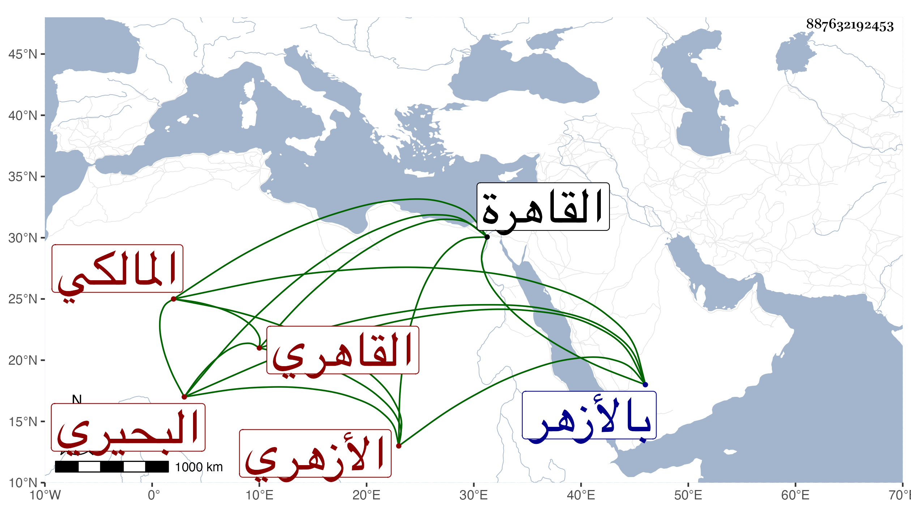

0902Sakhawi.DawLamic.ITO20230111-ara1.EIS1600.887632192453
Biography ID: 887632192453
1000
سليمان بن شعيب بن خضر البحيري ثم القاهري الأزهري المالكي . ولد تقريبا بعد سنة ست وثلاثين وثمانمائة ، وقدم القاهرة وهو كبير فقرأ القرآن وتلا به برواية أبي عمرو بتمامها على حبيب العجمي وليس بالمشهور ، وكذا تلا لابن كثير بتمامها ولغيرها مما لم يتم على شيخه النور السنهوري وبه انتفع في الفقه لمزيد ملازمته له فيه بل أخذ فيه أيضا عن العلمي والنور الوراق وكذا أخذ غير الفقه عن السنهوري بل أخذ أصول الدين والمنطق عن التقي الحصني ، والمنطق أيضا مع العربية والمعاني والبيان عن الجمال عبد الله الكوراني وأصول الفقه عن العلاء الحصني وشرح نظم النخبة عن مؤلفه التقي الشمني وسمع عليه وعلى الجلال بن الملقن والشهاب الحجازي وأم هانىء الهورينية وغيرهم أشياء ، وبرع في الفقه وتصدر لافادته بالأزهر وغيره وحج وناب عن السراج بن حريز ثم عن بنيه في تدريس المالكية بجامع طولون وكذا عن ابن شيخه السنهوري بالبرقوقية ، وحفظ الرسالة في الفقه وألفية النحو كل ذلك مع سكون وتواضع وديانة وتقلل وتقنع وهو أحد المنزلين بتربة الأشرف قايتباي
